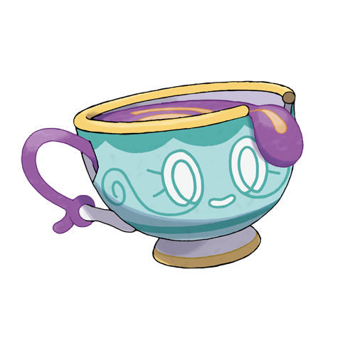

Sinistea es un Pokémon de tipo Fantasma, introducido en la octava generación (Pokémon Espada y Escudo). Su diseño está inspirado en una taza de té, y su mecánica de combate lo convierte en un Pokémon intrigante y misterioso.
Lo interesante de Sinistea es que tiene dos formas: una forma normal y una forma auténtica, que se diferencia por su pequeño sello en la base de la taza. La forma auténtica es extremadamente rara y muy valorada por los coleccionistas.
Personalidad y comportamiento
Sinistea es un Pokémon tímido y solitario que habita en casas antiguas, con una personalidad reservada pero curiosa; se muestra distante y cauteloso, aunque puede volverse leal si gana confianza. Es muy territorial: si alguien bebe de su taza sin permiso, puede poseer su cuerpo brevemente. Elegante y misterioso, prefiere el sigilo y los ataques mentales a la fuerza bruta, actuando con astucia más que con agresividad. Su existencia misma, nacida de un espíritu solitario que poseyó una taza de té olvidada, refleja su aire melancólico y refinado, y su dualidad entre lo auténtico y lo falsificado le añade un toque de crítica sutil al valor de lo original frente a las imitaciones.